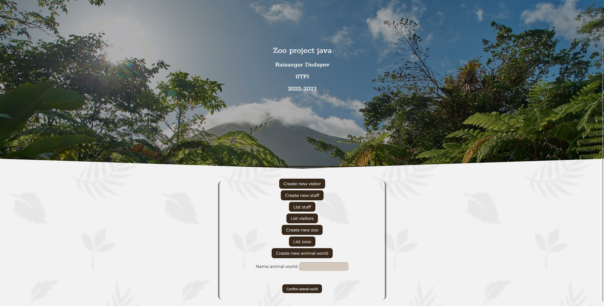
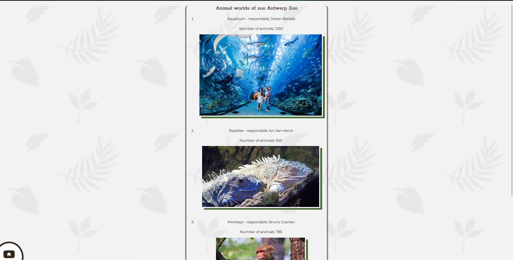
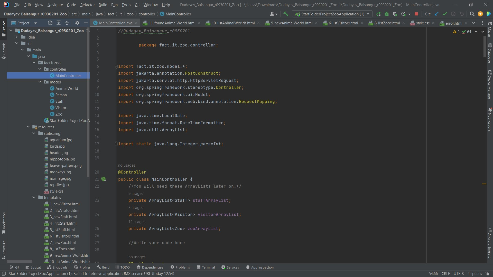

ZOO animal WORLD
Application Development in Java

Data Management and Initialization
Initiating the project, essential data management functionalities are established within the MainController framework. Initialization routines configure ArrayLists for staff members, visitors, and zoos, with predetermined methods facilitating data population. Compliance with project directives mandates the inclusion of personal data, including individual visitor profiles, reinforcing adherence to project stipulations from the outset.
Project Zoo Summary
This project took place within the framework of the Application Development in Java course at Thomas More Geel. The Project Zoo initiative involves a multi-phase endeavor aimed at crafting a comprehensive web application tailored for zoo management, encompassing staff, visitors, and animal worlds. Upholding stringent guidelines against collaboration or external aid ensures equitable assessment, demanding individual effort and proficiency in Java programming and web development.
User Interface and Navigation
User interface design prioritizes seamless navigation and intuitive interaction paradigms. Strategic placement of links on the home page facilitates access to various functionalities, spanning staff and visitor listings, staff and visitor registration, zoo creation, and exploration of animal worlds. Each link corresponds to HTML pages prefixed with identifiers, ensuring systematic organization and navigational clarity.Initiating the project, essential data management functionalities are established within the MainController framework. Initialization routines configure ArrayLists for staff members, visitors, and zoos, with predetermined methods facilitating data population. Compliance with project directives mandates the inclusion of personal data, including individual visitor profiles, reinforcing adherence to project stipulations from the outset.
Functionality Expansion and Error Handling
Progressing through the project, the necessity to expand functionalities arises, prompting the integration of additional features such as visitor registration at specific zoos and detailed displays of zoo and animal world information. Concurrently, the implementation of robust error handling mechanisms is paramount, ensuring graceful resolution of user input anomalies with appropriate error messages and redirections



What did i learn?
I'm delighted to have had the chance to work on this project, as it has significantly bolstered my comprehension of Java, frameworks, and template engines. Exploring Java programming in-depth, I delved into its syntax and object-oriented principles, applying theoretical knowledge to practical scenarios. This project served as a valuable platform to solidify my understanding of Java's concepts and functionalities.
Moreover, the utilization of frameworks like Spring MVC proved instrumental in simplifying the development process. With its clear architecture based on the Model-View-Controller paradigm, Spring MVC provided a structured approach to building web applications. By compartmentalizing components into the model, view, and controller, it promoted modularity, easing codebase maintenance and collaboration. Additionally, the integration of a template engine such as Thymeleaf further enriched my learning, offering robust tools for generating dynamic content and enhancing user experiences. Through hands-on experience with these technologies, I gained practical insights into their features and best practices, increasing my general IT knowledge.
Moreover, the utilization of frameworks like Spring MVC proved instrumental in simplifying the development process. With its clear architecture based on the Model-View-Controller paradigm, Spring MVC provided a structured approach to building web applications. By compartmentalizing components into the model, view, and controller, it promoted modularity, easing codebase maintenance and collaboration. Additionally, the integration of a template engine such as Thymeleaf further enriched my learning, offering robust tools for generating dynamic content and enhancing user experiences. Through hands-on experience with these technologies, I gained practical insights into their features and best practices, increasing my general IT knowledge.